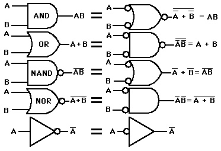

Negative Logic Gates
|

|
Each of the basic gates has a negative logic equivalent as shown. The equivalence is shown by the application of DeMorgan's theorem. It amounts to changing AND's to OR's or vice versa and inverting all input and output lines compared to the implementation in gates shown at left.
| |
|
Index
Electronics concepts
Digital Circuits |